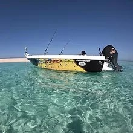
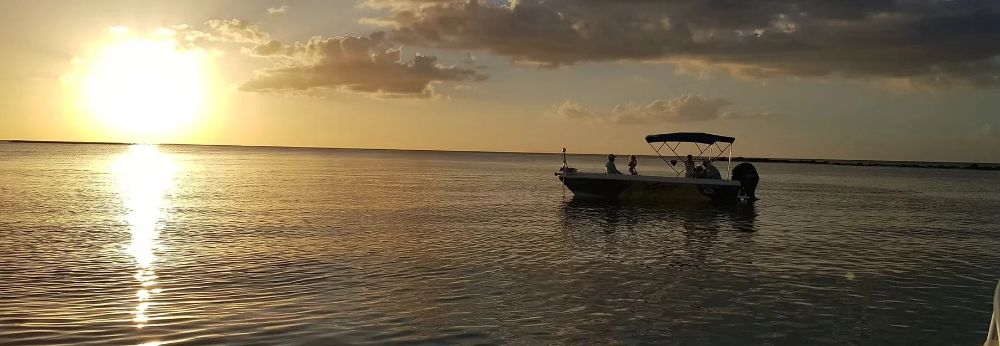

01 / MARINE
Marine & PWC
Outboard servicing, diagnostics, repairs, electrical work, rebuilds, repowers and insurance repairs.
See marine services →Cairns • FNQ • Cape York
Hands-on mechanical experience for boats, outboards, PWC, motorcycles and machinery — from the workshop to the water.

Built for the North
Cairns & Cape Mechanical combines a fully equipped workshop with mobile service across Far North Queensland and Cape York.
With more than 25 years of hands-on experience, the focus is straightforward: diagnose the problem properly, do the work right and give you honest advice about what your machine actually needs.
What we work on
Servicing, diagnostics and repairs for the machines that get used hard in North Queensland.
Outboard servicing, diagnostics, repairs, electrical work, rebuilds, repowers and insurance repairs.
See marine services →Servicing, diagnostics, suspension, performance work, rebuilds and general repairs.
See motorcycle services →Authorised Tohatsu Marine dealer for supply, installation, servicing and repairs.
Tohatsu Marine →

Factory trained
OEM training across Yamaha, Can-Am, Kawasaki, Husqvarna, Sea-Doo, Caterpillar and Hitachi, including Yamaha OEM factory training.